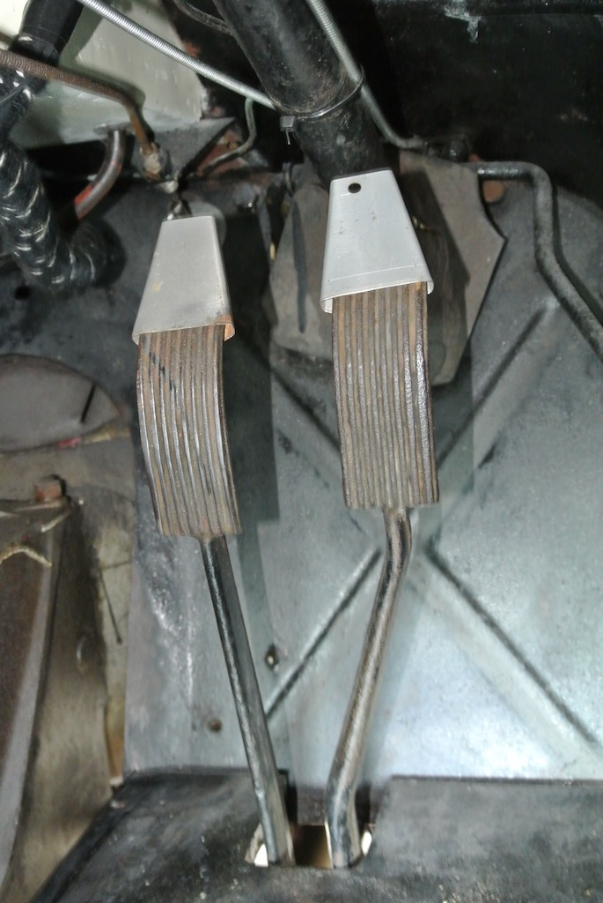
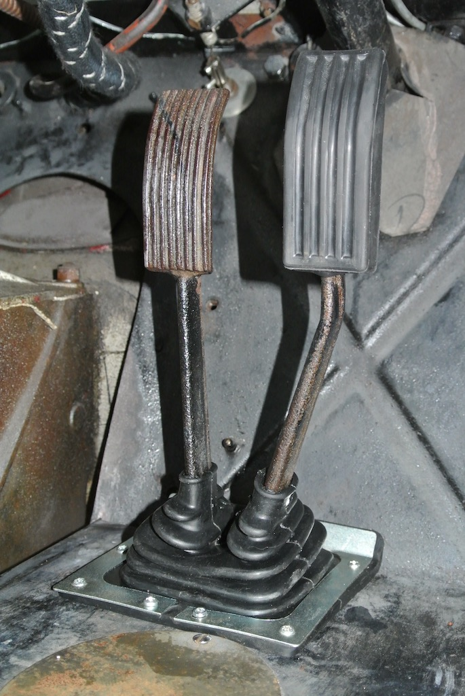

Odd Jobs
Like most classic car owners I have a list of things to do to TC4985. The list being roughly ordered in terms of the scale of the work. Luckily the ‘major’ jobs are now fairly low, although these are the known jobs. There are, of course, the unknown jobs that will emerge at their own time! For example, in the three years that I’ve owned TC4985 I found that a previous owner had installed the stub axles on the wrong sides! Then I found that the spindles on those stub axles showed signs of cracks at their root and so I had new spindles made and installed. The most recent ‘unknown’ job was to replace the half shaft and hub on one side and to fit new nuts (with integrated oil seals) holding the wheel bearings to the rear axle.
The less severe jobs tend to get done as and when, mainly when working on a particular area of the car or waiting for parts to arrive. For example, if the car is up on axle stands then you can get at parts that are not normally accessible. Also, while the radiator was removed I had easy access to the engine mounts and so replaced the rubber parts. Sometimes it is just that the car can’t be driven while waiting for a part and so some more minor jobs can be tackled. This was the case while waiting for the new hub and half shaft. Two supposedly minor jobs were related to the rear axle, but a third was just a job on the list.
 I had found that the worn half shaft was ‘stuck’ in the differential. Actually it could be retracted an inch or so, but would then jam. Having driven it out from the other side I found that the splines were damaged and so wanted to check that the splines in the differential gear wheels were not also damaged. There was also an oil leak from the main differential gasket that had been dripping on to cardboard for three years. So this was an opportunity to fix it. As you can see in a later photo, access to the differential and its oil filler requires removing the floor in the tonneau area behind the seats; an area usually full of spares, containers and tools.
I had found that the worn half shaft was ‘stuck’ in the differential. Actually it could be retracted an inch or so, but would then jam. Having driven it out from the other side I found that the splines were damaged and so wanted to check that the splines in the differential gear wheels were not also damaged. There was also an oil leak from the main differential gasket that had been dripping on to cardboard for three years. So this was an opportunity to fix it. As you can see in a later photo, access to the differential and its oil filler requires removing the floor in the tonneau area behind the seats; an area usually full of spares, containers and tools.
 Freeing the differential from the prop shaft and the rear axle was straightforward. However, I'd not appreciated just how heavy the differential is. While lying on the ground under the car, the differential, with me holding it, made a 'controlled fall' to the ground (actually on to some folded corrugated cardboard)! Luckily the splines were fine, but getting the differential back was quite another matter. I didn't have the strength to lift it from below or lower it from above. As can be seen in the photo, I even constructed a rope harness to help lower the differential, but could not then manoeuvre it into place. In the end I had to remove the spare wheel and luggage rack so that I could stand close up against the fuel tank and built a brick platform (pile of bricks) on to which I lowered the differential. From there I was able to lift the unit on to the studs. And I cured the oil leak.
Freeing the differential from the prop shaft and the rear axle was straightforward. However, I'd not appreciated just how heavy the differential is. While lying on the ground under the car, the differential, with me holding it, made a 'controlled fall' to the ground (actually on to some folded corrugated cardboard)! Luckily the splines were fine, but getting the differential back was quite another matter. I didn't have the strength to lift it from below or lower it from above. As can be seen in the photo, I even constructed a rope harness to help lower the differential, but could not then manoeuvre it into place. In the end I had to remove the spare wheel and luggage rack so that I could stand close up against the fuel tank and built a brick platform (pile of bricks) on to which I lowered the differential. From there I was able to lift the unit on to the studs. And I cured the oil leak.
 The third photo shows the differential back in place. You can see the connection to the prop shaft is quite accessible and the end of the prop shaft (at the gearbox end) slides in and out, so it was easy to separate it from the pinion flange and tie it up out of the way. However, one of the other jobs on my list was to clean up the prop shaft and the underside of the tunnel, both of which were covered in surface rust. I was still waiting for the new hub, so I removed the prop shaft. However, access to the gearbox end was obscured by the tunnel, the gearbox mounts and the handbrake cross member. I removed the carpets and the gearbox cover in the hope that this would give me access to the universal joint, but it did not. So I had to tackle the job from under the car, where the movement of spanners was very limited. I also had to remove the bolts using long-nosed pliers and found that the bolts were 1/2” AF, rather than the expected BSW. After freeing the shaft completely I found that the front flange wouldn't go into the tunnel, so as to clear the cross members, and so I couldn't get it out! Luckily I could undo the cap that stops the splined end coming off. Then I could remove the end and withdraw the main tube.
The third photo shows the differential back in place. You can see the connection to the prop shaft is quite accessible and the end of the prop shaft (at the gearbox end) slides in and out, so it was easy to separate it from the pinion flange and tie it up out of the way. However, one of the other jobs on my list was to clean up the prop shaft and the underside of the tunnel, both of which were covered in surface rust. I was still waiting for the new hub, so I removed the prop shaft. However, access to the gearbox end was obscured by the tunnel, the gearbox mounts and the handbrake cross member. I removed the carpets and the gearbox cover in the hope that this would give me access to the universal joint, but it did not. So I had to tackle the job from under the car, where the movement of spanners was very limited. I also had to remove the bolts using long-nosed pliers and found that the bolts were 1/2” AF, rather than the expected BSW. After freeing the shaft completely I found that the front flange wouldn't go into the tunnel, so as to clear the cross members, and so I couldn't get it out! Luckily I could undo the cap that stops the splined end coming off. Then I could remove the end and withdraw the main tube.
 I cleaned the underside of the TC's tunnel with emery cloth and then with thinners before giving it two coats of smooth black Hammerite. After cleaning the prop shaft in the same way I made marks on the tube and splined end with a cold chisel so that I could re-align them. I then also gave the tube section of the prop shaft two coats of Hammerite. Although I cleaned the universal joints and the splined section, I decided not to try to paint them. Refitting the shaft was a simple reverse process. Another job ticked off the list.
I cleaned the underside of the TC's tunnel with emery cloth and then with thinners before giving it two coats of smooth black Hammerite. After cleaning the prop shaft in the same way I made marks on the tube and splined end with a cold chisel so that I could re-align them. I then also gave the tube section of the prop shaft two coats of Hammerite. Although I cleaned the universal joints and the splined section, I decided not to try to paint them. Refitting the shaft was a simple reverse process. Another job ticked off the list.
Whereas the differential and the prop shaft were related to the work I was doing on the rear axle, there was another job that had been on my list for a while, but required removing the carpets, which were now out. When I bought TC4985 in June 2015 there were no rubbers on the brake and clutch pedals and no draught excluder around the base of the pedal's stems. So one of the first things that I bought were two pedal rubbers and the excluder bellows. However, when I tried to fit the bellows I couldn’t get them over the pedals. And when I tried fitting the pedal rubbers, one split!
Following my previous failure to fit the draught excluder directly over the pedals I made two 'flattened cones' from some scrap aluminium and pushed them over the pedals. After coating them in grease I was then able to pull the bellows over the pedals and then screw the fixing plate to the floorboards. The final photo shows the draught excluder in place, with one of the pedal rubbers fitted. I glued the split in the other rubber and then fitted it, finally needing to cut the carpet around the bellows. Tick!
Of course, there are still plenty of jobs left on my list. Some are ‘major’, such as getting the front springs retempered, several are minor, but involve significant disassembly, and others could be either, such as oil getting into one of the cylinders. The latter could be just a damaged oil seal or it might need new valve guides. Perhaps I’ll remove the head after the South Downs Run!
(Written 7th August 2018; published in WSMGOC Main Gear, October 2018.)
© David James 2020 Last updated: 30th April 2020